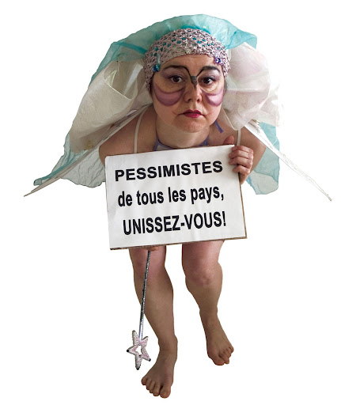

EXPOSITION EN COURS
ARTS PLASTIQUES • RÉSIDENCE
SALOMÉ CHATRIOT × STUDIO FASSE
Respiration synthétique, sculptures de marbre et circulation de fluides sous éclairage sculptural in situ.
En savoir plus
→